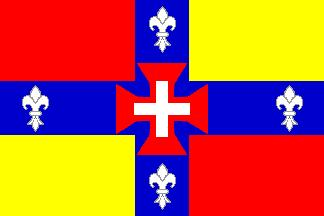
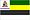

Esta é uma lista de municípios do estado de São Paulo por área territorial, segundo o quadro territorial vigente em 30 de abril de 2019, publicado pelo Instituto Brasileiro de Geografia e Estatística (IBGE) em 20 de maio de 2020
| # | Munícipio | Área (km²) | % do estado |
|---|---|---|---|
| 1º |  Iguape | 1 978,795 | 0,7972 |
| 2º | Itapeva | 1 826,258 | 0,7357 |
| 3º |  Itapetininga | 1 789,350 | 0,7209 |
| 4º | Eldorado | 1 654,256 | 0,6664 |
| 5º | Capão Bonito | 1 640,230 | 0,6608 |